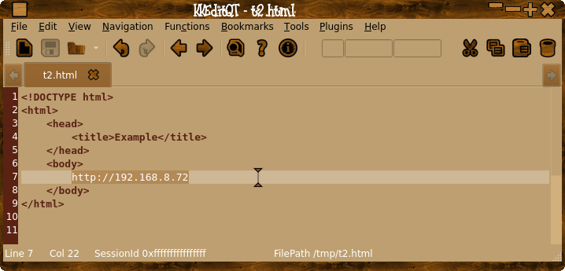
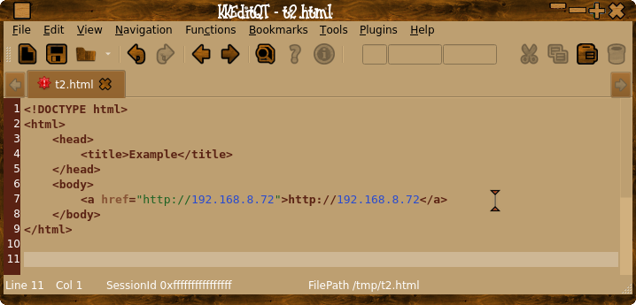
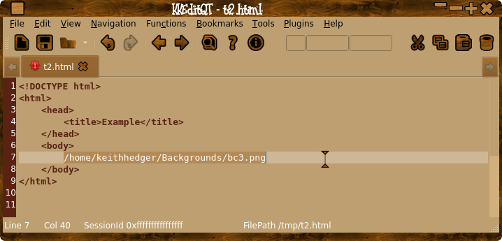
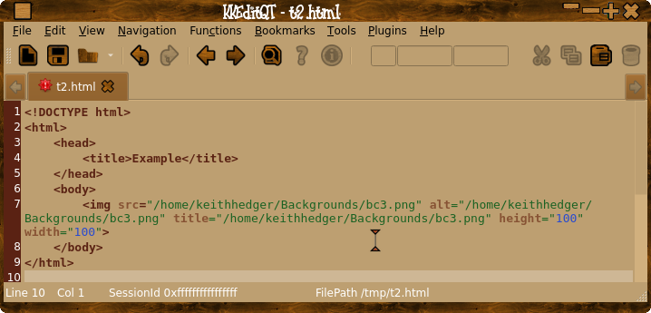
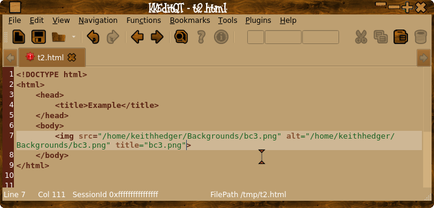
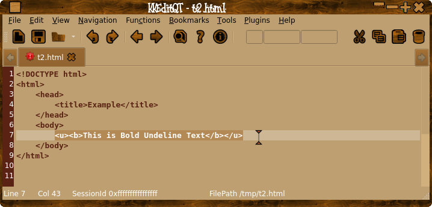
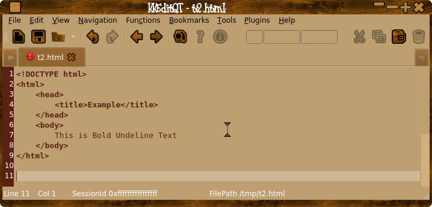
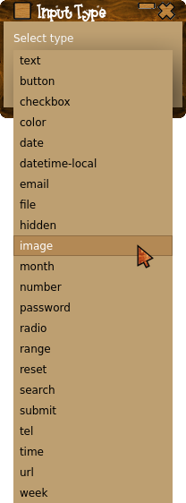
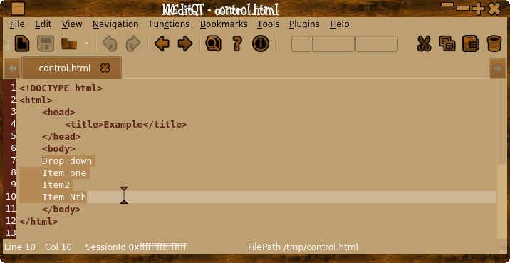
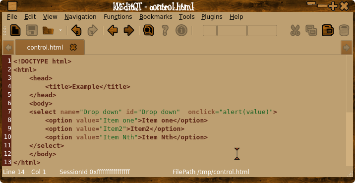

Adds menu's to the context menu to create html tags.
If text is selected the tag will surround the text and with some tags ( eg "Link" ) will place the text in the appopriate place.
If there is no selection an empty tag will be created at the insertion point.
E.g.
Create link:

Select HTML Tags->Links->Link.

The link text can then be changed to suit.
Insert Image:

The "title", "alt", "width" and "height" are filled in with default values, edit to suit.


Most menu items are self explanatory, "Anchor" for instance will create a named anchor of the selected text.
The "Go To Anchor" menu item will create a link to the named anchor.
The "Remove Tags" menu item will attempt to remove all tags from the selection, some tags can not be removed ( tags with no closing tags eg image ).

HTML Tags->Remove Tags.

Buttons are made with HTML Tags->Controls->Button
Drop downs are made with HTML Tags->Controls->Select
Individual options can be created with HTML Tags->Controls->Options.
Input controls can be selected via the 'Input' menu item, if yadqt or yad is installed you will get a list of different types, ( default is "text").



When selecting HTML Tags->Font Styles->Font or HTML Tags->Font Styles->Font Colour or HTML Tags->Links->Image and yadqt is installed an appropriate dialiag is popped up, yadqt is available here:
YadQt
Alternativly if yad is available that will be used, yad is in most repos or here:
yad